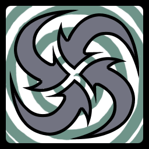

17 |
Stamemblemen |
 |
Er zijn twee soorten kaarten:
Symboolkaarten Op de kaarten staan verschillende symbolen. Deze symbolen kunnen vier verschillende kleuren hebben. Als er twee identieke symboolkaarten worden opengelegd, vindt er een duel plaats. Normaliter is alleen het symbool belangrijk, niet de kleur. BEHALVE als de speciale GELIJKE-KLEURKAART wordt omgedraaid...
Dit zijn een paar vormen die je op de kaarten zult vinden - let op subtiele overeenkomsten!
Pijlkaarten Er zijn drie soorten pijlkaarten. Dit zijn speciale kaarten die geen normale duels starten, maar de regels van het spel veranderen.
Alles-omdraaienkaart Als je de ALLES-OMDRAAIENKAART openlegt, wordt er afgeteld. Na het aftellen draaien alle spelers automatisch een kaart om. In deze situatie moet je oppassen voor duels.
Snel-grijpkaart Als je de SNEL-GRIJPKAART openlegt, krijgt elke speler de kans om de totem te grijpen. De eerste speler die de totem vastgrijpt, legt al zijn openliggende kaarten in de pot.

Gelijke-kleurkaart Als een speler in een spel met 4 of meer spelers een GELIJKE-KLEURKAART openlegt, moeten spelers met gelijke kleuren de totem proberen vast te grijpen, ongeacht het symbool op hun kaarten. De speler die de GELIJKE-KLEURKAART heeft omgedraaid, zit deze ronde uit.
Bij spellen met 3 spelers worden de gelijke-kleurkaarten uit het spel gehaald. In plaats daarvan treedt de SNEL-GRIJPREGEL in werking als alle openliggende kaarten dezelfde kleur hebben.
Gelijke kleuren blijven geldig totdat een speler de totem vastgrijpt of omver stoot, of totdat je een andere pijlkaart openlegt.
|


 |
 |
 |